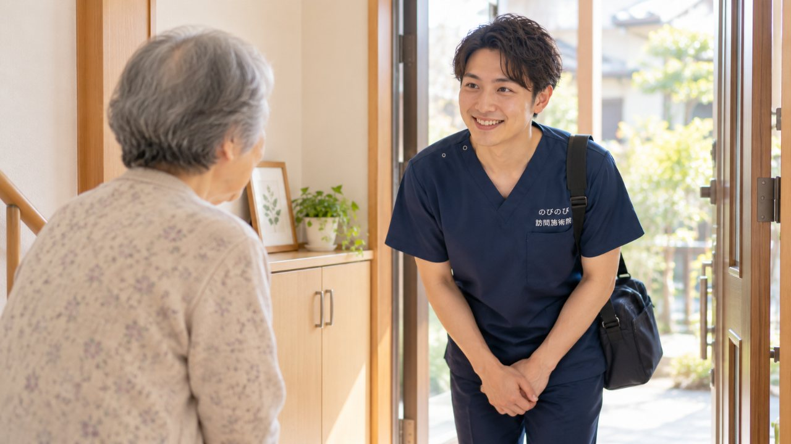

訪問鍼灸マッサージに関心はあっても、どこにどう申し込むのか、何を用意すればいいのか、初回は誰が来て何をするのか。分からないことが重なって、一歩が出ないというご家族は多いです。この記事では、問い合わせから施術が始まるまでを七つのステップに分けて、それぞれ何をするのかを順番に説明します。読み終える頃には、始めるまでの道すじが具体的に見えているはずです。
はじめに要点だけ。始めるまでの流れは、①問い合わせ→②体の状態のヒアリングと対象確認→③医師の同意書の取得→④日程調整→⑤初回訪問→⑥継続と頻度の相談→⑦支払い、の順です。手間のかかる同意書のやりとりは、のびのびが段取りを整えます。申し込みで用意いただくのはマイナ保険証か資格確認書くらいで、当日は寝たまま、いつもの服装のまま受けられます。費用は1回の総額3,950円のうち負担割合分だけ。1割の方で約395円、別途の出張費はかかりません。
何から始めればいい？まずは電話かフォームで相談
最初にすることは、電話かお問い合わせフォームでの相談です。ご本人がどんな痛みやしびれで困っているか、通院がどのくらい難しくなっているか、そしてお住まいの場所を聞かせてください。それだけで、こちらである程度の見当がつきます。相談だけで終わっても構いません。費用もかかりません。
「そもそも自分が対象になるのか知りたい」という段階でも大丈夫です。ご本人が電話に出るのが難しいときは、ご家族だけで相談を進められます。こちらから契約を急かすことはありません。
体の状態をうかがい、初回訪問日を決める
相談で対象になりそうだと分かったら、体の状態をもう少し詳しくうかがいます。どこがつらいのか、どのくらい動けるのか、冷えやこわばりはどうか。あわせて、初回に伺う日を調整します。曜日や時間帯は、デイサービスのない日にしたい、家族が立ち会える時間がいい、といったご都合に合わせられます。
訪問鍼灸マッサージが保険の対象になるのは、神経痛・リウマチ・頸肩腕症候群・五十肩・腰痛症・頸椎捻挫後遺症といった症状です。当てはまりそうかどうかも、この段階でお伝えします。
医師の同意書は当院が進めます
思い立ってその日からすべてが始まる、というわけではありません。保険（療養費）を使うには、医師の同意書が要ります。ここが一つの関門に見えるかもしれませんが、書式もお願いのポイントも当院が用意します。受診のときに先生へ渡してもらうだけで済むよう、段取りはこちらで整えます。
すでに定期的に通院している方なら、その受診のついでに頼めることがほとんどです。同意書のしくみをもう少し知りたい方は医師の同意書とは？取得の流れと注意点を、始めるまでにかかる日数の目安は申し込みから受けるまで何日かかる？を読んでみてください。
初回訪問｜カウンセリングと、無理のない施術
初回は、その日の体調やつらい場所を確かめるカウンセリングから始めます。いきなり強く押すことはしません。力加減は弱めから試し、様子を見ながら合わせていきます。伺うのは国家資格を持つはり師・きゅう師です。使う鍼は髪の毛ほどの細さで、お灸も心地よい温かさに調整します。
いきなり申し込むのはためらう、という方には無料体験もあります。当日どんなことをするのか、どのくらい時間がかかるのかは無料体験では何をする？当日の流れにまとめました。
横になれる場所があれば、広い部屋は要りません。ベッドでも布団でも、いつもの服装のまま、寝たまま受けられます。体をほぐす手技や、動く範囲を保つ機能訓練も、その日の状態に合わせて組み合わせます。
受ける回数とペースは、体調を見ながら一緒に
初回を受けたあと、続けるかどうか、続けるならどのくらいの頻度がよいかを一緒に決めます。週1回から始める方もいれば、週2回、週3回と受ける方もいます。決まった型に当てはめるのではなく、体の状態とご家庭の事情を見ながらペースを選びます。合わないと感じれば、そこで止めていただいて構いません。
体調が落ち着いてきたら、回数を増やすより間隔をあける、という提案をすることもあります。施術は病気を治すものではなく、つらさをやわらげ、動ける状態を保つための手当てです。効き方には個人差があります。
費用は、保険を使った分だけ
費用は、はり・きゅうの医療保険を使って計算します。1回の総額は3,950円で、支払うのはご自身の負担割合の分です。1割の方でおよそ395円。エリア内は同額で、別途の出張費はかかりません。
たとえば週2回続けても、1割の方でひと月およそ3,160円が自己負担の目安です。動く範囲を保つ機能訓練は、この中に含みます。これらについて別途の料金はいただきません。値引きではなく、公的な医療保険にもとづく正規の料金です。
要介護認定はいりません｜介護保険との関係
この施術に、要介護認定は必要ありません。医師の同意書があれば、医療保険で受けられます。介護保険を使っている方でも、区分支給限度基準額とは別の枠組みなので、併用できます。デイサービスやヘルパーの利用に響くことはありません。
一つだけ注意点があります。同じ部位について、医療保険のリハビリと鍼灸を同じ時期に受けている場合、両方を同時に保険で算定することはできません。すでに他の医療機関でリハビリを受けている方は、相談のときにその旨を教えてください。無理なく続けられる形を相談しながら決めていきます。
ほかにも気になることがあれば
このページでは申し込みから施術までの流れを中心にご説明しました。同意書の頼み方、ひと月の料金、回数や曜日、介護保険とのつながり、施術者のことなど、ほかにも気になる点があると思います。よく聞かれることは訪問鍼灸マッサージのよくある疑問｜料金・同意書・制度から記事を探すに8つのまとまりで整理してありますので、あてはまるところから読んでみてください。
よくある質問
申し込みに必要なものは何ですか？
マイナ保険証か資格確認書があれば始められます。介護保険を使っている方はその情報、かかりつけ医が分かればその情報もあると、同意書の段取りがスムーズです。手元になければ、分かる範囲で構いません。
初回は何をしますか？
その日の体調やつらい場所を確かめてから、鍼やお灸、体をほぐす手技、機能訓練を状態に合わせて組み合わせます。1回はおおむね20分から30分。終わったあと、家で気をつけるとよいこともお伝えします。合わなければ続ける必要はありません。
申し込んでから、どのくらいで始められますか？
同意書をいただく医療機関の状況にもよりますが、おおむね数日から二週間ほどが目安です。すでに定期通院している方なら、比較的スムーズに始められることが多いです。
同意書は自分で用意する必要がありますか？
いいえ。依頼の書類や段取りは、のびのびが用意します。ご家族が病院に一からお願いに行っていただく必要はありません。定期通院している方なら、受診のついでにお願いできることがほとんどです。
当日は何を準備すればいいですか？
広いスペースは要りません。横になれる場所があれば十分で、ベッドでも布団でも構いません。いつもの部屋で、いつもの服装のまま、寝たままで受けられます。タオルなど施術に使うものは持参します。
誰が来て、どのくらいの時間ですか？
伺うのは、国家資格を持つはり師・きゅう師です。1回の施術はおおむね20分から30分。同じ曜日・同じ時間帯で定期的に伺うことが多く、生活のリズムに組み込みやすくなります。
本人が乗り気でないのですが、家族だけで相談できますか？
できます。ご本人が迷っている段階でも、まずはご家族から状況を聞かせていただければ、どう進めればご本人が受け入れやすいかを、ご希望をうかがいながら決めます。無理に始めることはしません。
費用はいくらで、どう支払いますか？
1回の総額3,950円のうち、支払うのは負担割合の分だけ。1割の方で約395円です。別途の出張費はかからず、エリア内は同額。支払いは月ごとにまとめてで、その月の施術内容が分かる明細をお渡しします。